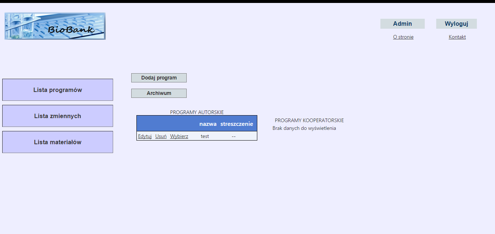
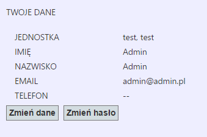

Do panelu użytkownika można przejść po kliknięciu nazwy użytkownika w prawym górnym rogu:

Zostaną wtedy wyświetlone podstawowe dane użytkownika:

Po kliknięciu przycisku Zmień dane można zmienić wszystkie wyświetlone dane. Po kliknięciu przycisku Zmień hasło można zmienić hasło użytkownika.
Created with the Personal Edition of HelpNDoc: Generate EPub eBooks with ease